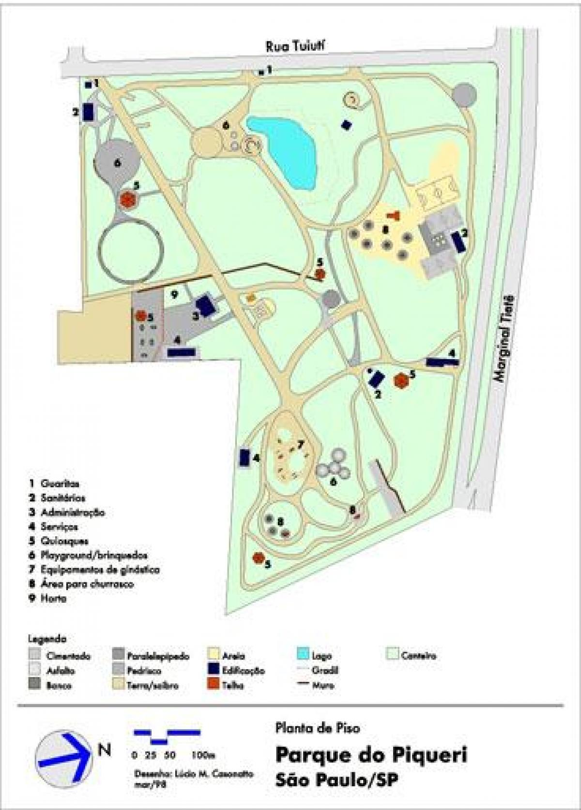

.png)

Parque Piqueri
- Endereço: R. Tuiuti, 515 - Tatuapé, São Paulo - SP, 03081-003
- Área: 97.3 mil m²
- Inauguração: 16/04/1978
- Aberto diariamente das 6h às 16h
- Entrada: Gratuita
- Site do parque: Clique aqui
- Contato:
- Fone: (11) 2097-2213
Sobre o Parque
Parque do Piqueri, localizado na região do Tatuapé, com uma área de 97.200 m², funciona diariamente das 6h às 18h com pista de Cooper, lago, playgrounds, aparelhos de ginástica, espaços para esportes e também com um agradável cheiro de eucalipto por conta de suas árvores.
O nome Piqueri faz alusão à tribo indígena que habitava o trecho localizado na confluência do Ribeirão Tatuapé e do Rio Grande, atual Tietê. Em 1978, a área do parque correspondente à antiga Chácara do Piqueri foi definitivamente entregue à comunidade como parque municipal. O bairro que o acolhe é a Mooca, que apesar de já apresentar processo de verticalização, ainda possui muitas casas, lembrando uma cidade do interior. Na região, é um dos mais bem-servidos em termos de educação superior, com três universidades particulares, além de dispor de teatros, bibliotecas, escolas, creches e hospitais.
Atividades que podem ser feitas no parque
- Caminhada
- Ciclismo
- Corrida
- Futebol
- Piquenique
- Andar de Skate
- Visita aos museus
- Vôlei
Mapa do parque
Imagens do Parque
Avaliação da equipe
Nota:
"A antiga chácara do Piqueri, que deu origem ao Parque, foi implantada em 1927 pelo Conde Francisco Matarazzo. Ela situava-se junto à foz do ribeirão do Tatuapé, que deu nome ao bairro e constituía-se de uma casa sede, pomar, granja, criação de diversos animais, entre eles búfalos, lhamas e veados, além de uma fábrica de queijos e uma área destinada às Indústrias Matarazzo. Hoje conta com uma ampla Flora e cerca de 116 espécies de Fauna"